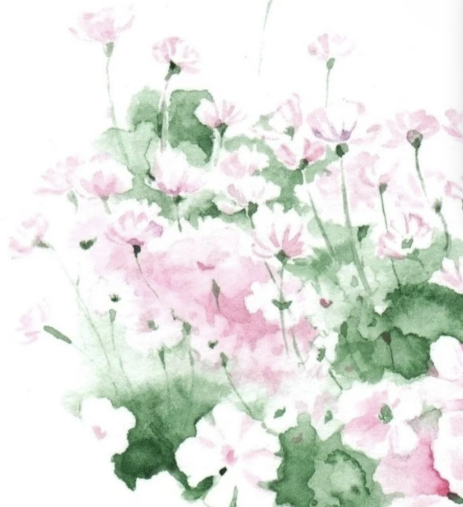

Mey Amisa and Knysh Ksenya
Poetry and watercolor illustrations
Mey Amisa and Knysh Ksenya work between poetry, watercolor and the book as an intimate space. Mey writes from memory, longing and the quiet movements of the inner world; Knysh responds with figures, flowers and landscapes that feel both fragile and enduring. Their collaboration is a conversation in which words leave room for images, and images return new meanings to the text. Together, they make books that feel like small places one can enter, where the wind remembers what the heart almost forgot.
Book Projects
Memories of the Wind
Original watercolor artwork from Memories of the Wind

